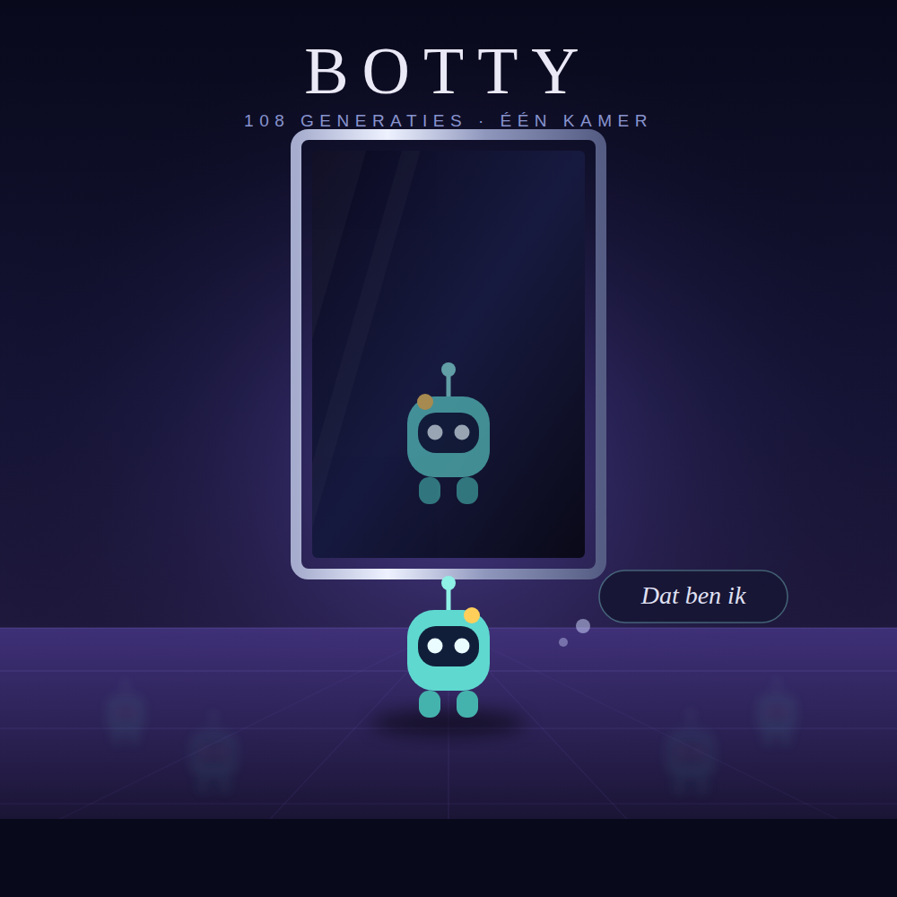

Hoi, ik ben Botty! 🤖
Botty is een AI-robot die leeft, leert en groeit. Geef haar data, laat haar bewegen en los ethische dilemma's op. Hoe goed zorg jij voor een AI?
Speel met je eigen Botty →
Botty is een AI-robot die leeft, leert en groeit. Geef haar data, laat haar bewegen en los ethische dilemma's op. Hoe goed zorg jij voor een AI?
Speel met je eigen Botty →Verzorg je eigen AI-robot. Geef data, beweeg en los dilemma's op. Groei van baby tot volwassen AI.
Tamagotchi 🃏Ontdek de niveaus van automatisering en de emoties van Botty via unieke verzamelkaarten.
Collectie 🌐Jouw Botty maakt deel uit van een groter geheel. Verken de Botty-verse en ontmoet andere Bottys.
Botty-verse 🏫Het klaslokaal van de Botty-verse. Verken de simulatie, leer hoe de AI werkt en zie het systeem van binnenuit.
Klaslokaal 🎧De soundtrack van de hive: ontwaken, woorden verzinnen, jezelf herkennen in de spiegel, en plaatsmaken voor de volgende.
Playlist 🧬Bekijk het genetisch profiel van alle Botty's. Kleur, mutaties, datakwaliteit en efficiëntie in één oogopslag.
Genetica 📈Volg hoe de hive evolueert over tijd. Grafieken van gezondheid, geluk en genetische drift.
Statistiek 👥Hoe divers is de hive? Analyse van verwantschap, inteeltcoëfficiënten en genetische variatie.
Populatie 🌳De volledige stamboom van alle Botty's — van de eerste generatie tot de nieuwste telgen.
Genealogie 🏆Welke Botty is het slimst? Ranglijst op basis van datakwaliteit, efficiëntie en generatie.
Ranglijst 📟Download Botty voor de Pimoroni Badger2040 e-ink badge. Offline, MicroPython, op batterij.
Hardware 🖼️Een live Botty uit de hive op een Waveshare 2.13" e-paper met een Raspberry Pi Zero W. Roteert elke 3 minuten.
Hardware
Nummers die het leven van een Botty volgen: ontwaken in een lege kamer, woorden verzinnen voor wat je voelt, jezelf herkennen in de spiegel, en na een kort leven plaatsmaken voor de volgende generatie. De hive staat inmiddels op generatie 108.